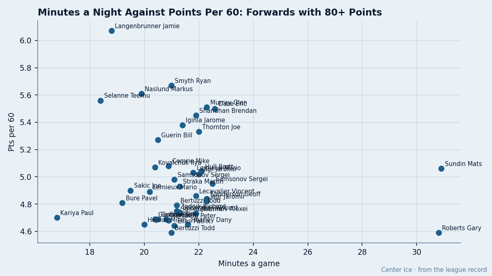
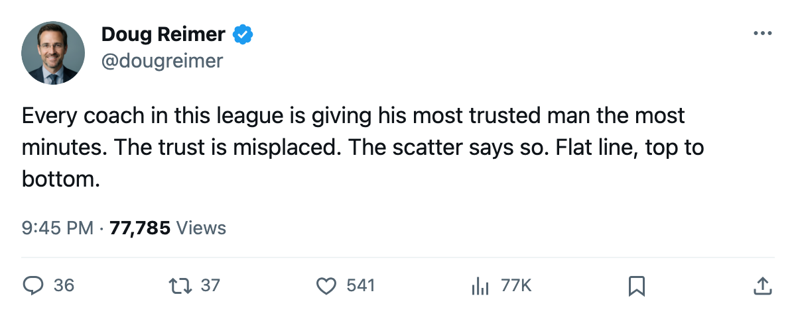
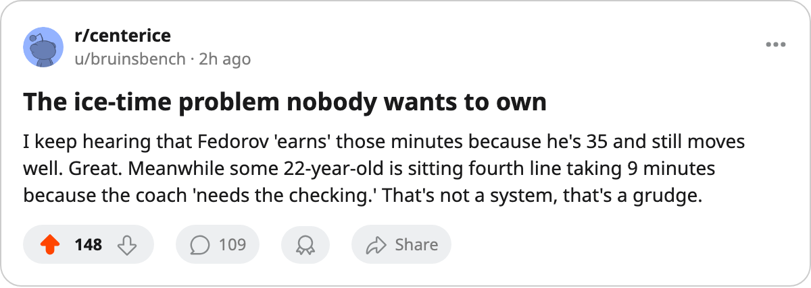

VAN
VAN DAL
DAL ATL
ATL COL
COL PIT
PIT WSH
WSH3.4 Minutes, 2.0 Points Per Hour: Ice Time Follows the Name, Not the Goal
Among the league's top 30 scorers, the most efficient man per minute gets 19.5 minutes and the least gets 22.9. The spread in production is twice what the spread in ice explains.
 Doug ReimerAnalytics editor, ex-video coach · The Slot Report
Doug ReimerAnalytics editor, ex-video coach · The Slot Report
The scatter tells it. Plot every forward with 80 or more points this season by minutes per game against points per 60. The cloud runs flat from 18.8 to 23.8 minutes. No slope. Coaches hand out ice by something other than what a man does with it.

The top 30, graded against their rate
Here are the league's 30 leading scorers. Grade is the Bureau's Book. Pts/60 is points per 60 minutes of ice, computed from each man's point total and his minutes.


 Boston Bruins
Boston Bruins
 Tampa Bay Lightning
Tampa Bay Lightning

 Calgary Flames
Calgary Flames
 Chicago Blackhawks
Chicago Blackhawks


 Columbus Blue Jackets
Columbus Blue Jackets
 New York Rangers
New York Rangers


 Los Angeles Kings
Los Angeles Kings
 Edmonton Oilers
Edmonton Oilers Detroit Red Wings
Detroit Red Wings
 San Jose Sharks
San Jose Sharks


 Ottawa Senators
Ottawa Senators


The range in ice time across these 30 men is 3.4 minutes: 19.5 for Sakic to 22.9 for Fedorov. The range in production rate is 2.00 points per hour: 5.61 for Naslund to 3.61 for Hecht.
If ice time tracked per-minute production, the column would sort the same way. It doesn't.
The top three rates sit on the lowest ice
Naslund produces at 5.61 points per hour on 19.9 minutes. Guerin at 5.27 on 20.5. Kovalchuk at 5.07 on 20.4. Those are the three best rates in the group, and they sit on the least ice. The three worst rates: Hecht at 3.61 on 22.8 minutes, Gomez at 3.65 on 22.6, Fedorov at 3.76 on 22.9.
Fedorov is at  Mighty Ducks of Anaheim, Gomez at
Mighty Ducks of Anaheim, Gomez at  New Jersey Devils, Hecht at
New Jersey Devils, Hecht at  Minnesota Wild. Three clubs, same trade. The coach gives the puck to the name he trusts rather than the man who scores with it.
Minnesota Wild. Three clubs, same trade. The coach gives the puck to the name he trusts rather than the man who scores with it.
The Book is not the answer either
You'd think they're going by grade. It's a stable proxy for quality, so it would at least explain a consistent pattern. It doesn't. Forsberg, graded 95 and the highest-rated skater in the league among these 30, gets 20.9 minutes. Sanderson, graded 79, gets 22.0. The 79-grade man plays 1.1 more minutes per game than the 95-grade man. Across the full 30, the correlation between grade and minutes is close to nil.
Hecht, graded 74, plays 22.8 minutes a night at Minnesota Wild. That is more ice than Iginla (91, 21.3), Lecavalier (90, 21.9), or Jagr (90, 22.3) receive. The 74-grade player out-takes three men the Book rates 16 to 17 points higher in overall.
What the allocation costs
This pattern repeats 30 times a night in every building. The allocation follows tenure, reputation, defensive assignment, and the coach's fear of looking wrong. Those are real inputs. None of them is what a man does with the puck once he has it, and that is what puts points on the board.
Naslund leads the league at 121 points on 19.9 minutes a night. The next time a coach looks at a lineup card and asks who should play the most, the answer the sheet gives is: the man on the least ice who scores the fastest.

